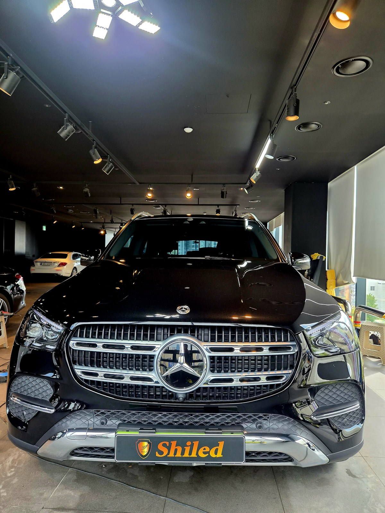
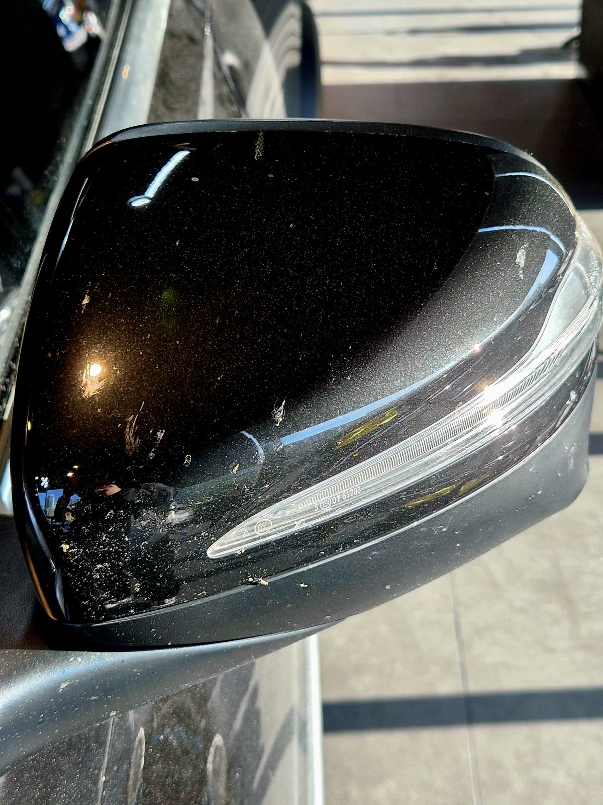
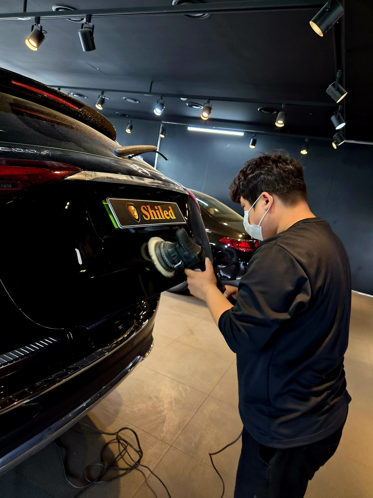
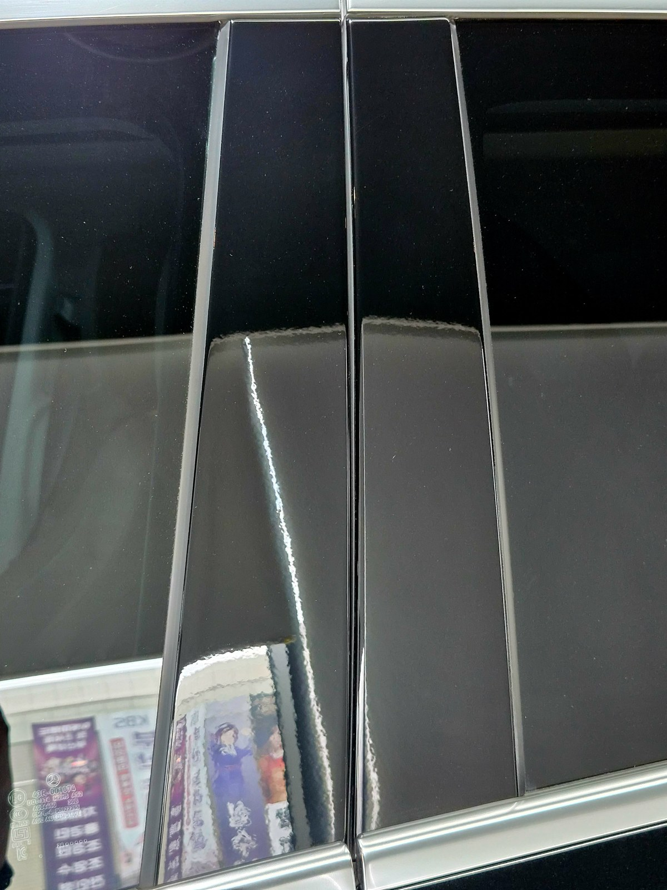
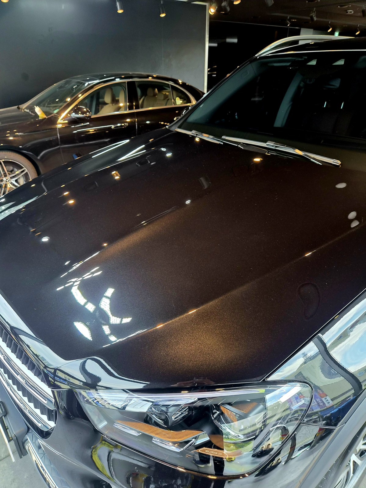

부산 쉴드광택에 들어온 벤츠 GLE300d 4MATIC입니다. 검정 메탈릭 바디입니다.
이 차는 광택으로 잔기스와 오염을 걷어내 깊은 블랙으로 마감했습니다.

대형 SUV는 왜 광택 차이가 크게 보이나
GLE는 패널이 넓고 평평합니다. 그만큼 빛을 많이 받아 잔기스와 반사 차이가 크게 드러납니다.
특히 미러캡처럼 곡면이 작은 부위는 오염이 가장 잘 보입니다. 입고 당시 미러캡에는 자잘한 오염과 물자국이 박혀 있었습니다.

광택 전. 미러캡에 자잘한 오염과 물자국이 박혀 있습니다
광택은 무조건 세게 깎는 게 정답이 아닙니다
잔기스를 없앤다고 클리어코트(도장면 맨 위 보호막)를 마구 깎으면, 정작 도장 수명을 깎는 일이 됩니다.
그래서 잔기스 깊이를 보고 필요한 만큼만 컴파운드와 패드를 맞춰 깎습니다. 큰 패널과 작은 곡면은 강도를 달리합니다. 16년간 직접 시공하며 잡아온 감각입니다.
기술자의 팁
미러캡·B필러 피아노블랙은 면이 작고 곡면이라, 큰 패널과 같은 힘으로 밀면 자국이 남습니다. 부위에 맞는 패드와 속도로 따로 잡아야 검정에서 티가 안 납니다.
광택 전, 전처리가 9할입니다
좋은 결과도 더러운 바탕 위에선 나오지 않습니다.
디테일링 세차로 표면 오염을 걷어내고, 철분 제거제로 박힌 쇳가루를 녹여냅니다. 마스킹으로 고무·플라스틱을 보호하고, 탈지까지 끝내야 비로소 광택을 올릴 면이 됩니다. 눈에 안 보이는 오염까지 잡는 게 퀄리티의 시작입니다.

패널마다 패드와 컴파운드를 바꿔가며 면을 균일하게 잡습니다
마감 후
보닛 위로 조명이 또렷하게 맺히고, B필러 피아노블랙이 거울처럼 반사합니다.
왜곡 없이 떨어지는 반사가, 넓은 면을 균일하게 잡았다는 증거입니다. 검정 특유의 깊은 블랙이 살아났습니다.


광택 후, 이렇게 관리하세요
광택으로 정리한 면은 관리로 수명이 갈립니다.
자동세차(기계세차)는 브러시가 잔기스를 다시 만드니 피하시는 게 좋습니다. 손세차 위주로 관리하시고, 표면을 오래 지키려면 유리막코팅으로 한 겹 더 잡아주시는 것을 권합니다.
자주 묻는 질문
Q. 대형 SUV는 광택 차이가 더 크게 보이나요?
A. 패널이 넓고 평평할수록 빛을 많이 받아 잔기스와 반사 차이가 크게 드러납니다. GLE처럼 면이 큰 차는 전후 변화가 한눈에 보입니다. 그만큼 면 하나하나 균일하게 잡는 시공이 중요합니다.
Q. 미러캡이나 피아노블랙은 따로 신경 쓰나요?
A. 네. 미러캡과 B필러 피아노블랙은 면이 작고 곡면이라 오염과 잔기스가 가장 잘 보입니다. 큰 패널과 같은 강도로 밀면 안 되고, 부위에 맞는 패드와 속도로 따로 잡아줍니다.
Q. 광택을 하면 도장이 얇아지지 않나요?
A. 필요한 만큼만 깎습니다. 클리어코트 두께를 보고 잔기스 깊이에 맞춰 컴파운드와 패드를 조절합니다. 무조건 세게 깎는 게 정답은 아닙니다.
Q. 광택 후 관리는 어떻게 하나요?
A. 자동세차는 잔기스를 다시 만드니 피하시고 손세차 위주로 관리하십시오. 표면을 오래 지키려면 유리막코팅으로 한 겹 더 잡아주시는 것을 권합니다.
Q. 쉴드광택 위치와 예약은 어떻게 하나요?
A. 부산 남구 유엔로220 1F 쉴드광택입니다. 예약·상담은 010-3384-1850, 대표 최한중이 직접 상담하고 책임 시공합니다.
큰 차일수록 시작점이 다르면 결과가 확연히 다릅니다.
제품을 직접 만드는 사람이 직접 시공합니다.
부산에서 광택·유리막코팅을 고민 중이시면 편하게 연락 주십시오.
어떤 차를 타냐보다 어떻게 타냐가 중요합니다~!
📞 010-3384-1850 견적 문의쉴드광택 · 부산 남구 유엔로220 1F · 대표 최한중